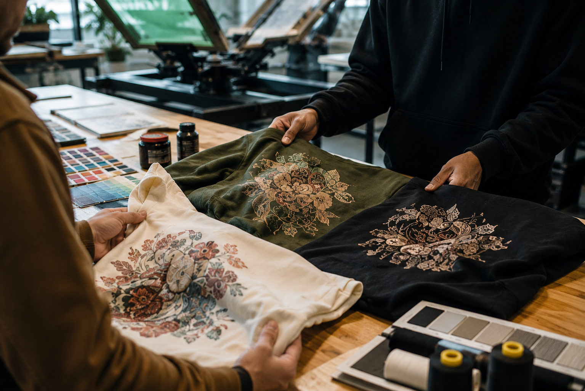

What are you making?
A merch drop, a uniform, a team order, an event piece or something that does not fit a category yet.
06 / The process
Good production starts with a good conversation. We keep the path visual and direct so you always know what is decided, what is next and what the finished piece is trying to say.

The MA2K path
Whether you arrive with a finished production brief or a sentence on a phone screen, the work follows the same clear rhythm.
Tell us the idea, audience, quantity, garment and timing you have in mind.
We match the artwork and intended feeling to screen printing, embroidery or DTF.
We align the blank, placement, colors, size range, artwork and target date.
Once the direction is approved, the studio takes the piece through its finish.
A better brief
We do not expect you to know the production language before you arrive. Start with the thing you want to make and we will help turn it into a clear apparel plan.
 Review every detail
Review every detailBefore you begin
Have these details nearby if you can. If not, send the first piece of the puzzle and we will build from there.
A merch drop, a uniform, a team order, an event piece or something that does not fit a category yet.
Your target date helps us suggest a path that is ambitious but realistic.
Artwork, garment references, color ideas and quantities are all useful starting points.
Ready to begin
Share the brief in your own words and we will come back with the right questions.